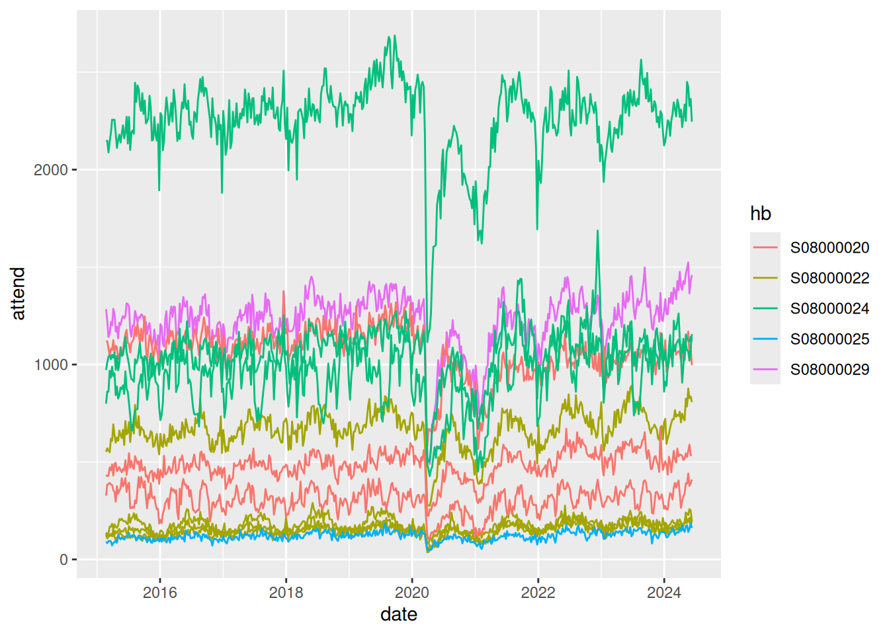
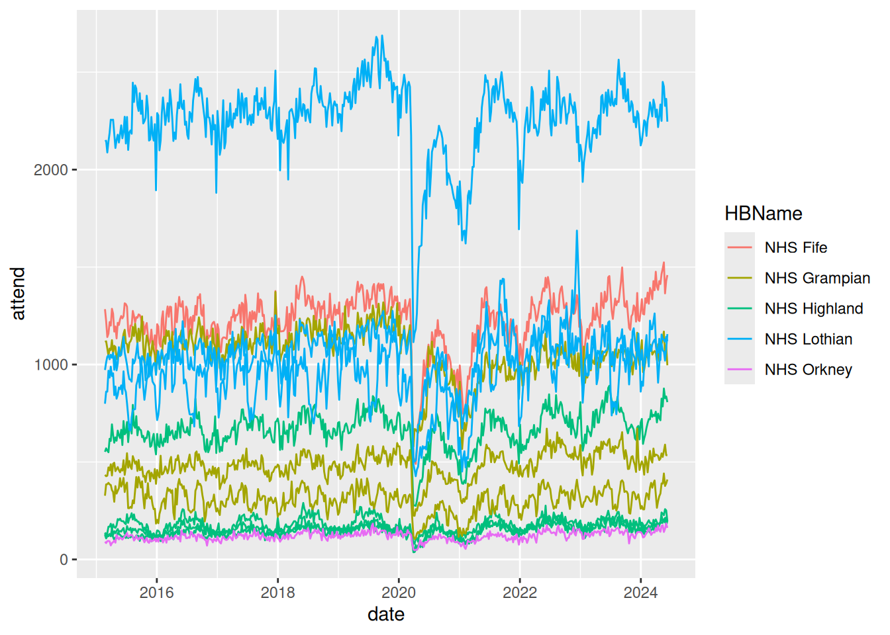

No feedback found for this session
Scope of the possible with R
R
overview
Session materials
- all materials
- slides
html / pdf
Slides for this session / .pdf slides for this session
Welcome
- this session is a non-technical overview designed for service leads
Session outline
- Why R, and why this session?
- R demo - take some data, load, tidy, analyse
- Strengths and weaknesses
- obvious
- less obvious
- Alternatives
- Skill development
R
- free and open-source
- multi-platform
- large user base
- prominent in health, industry, biosciences
Why this session?
- R can be confusing
- it’s code-based, and most of us don’t have much code experience
- it’s used for some inherently complicated tasks
- it’s a big product with lots of add-ons and oddities
- But R is probably the best general-purpose toolbox we have for data work at present
- big user base in health and social care
- focus on health and care-like applications
- not that hard to learn
- extensible and flexible
- capable of enterprise-y, fancy uses
R demo
- this is about showing what’s possible, and give you a flavour of how R works
- we won’t explain code in detail during this session
- using live open data

Load that data
One small bit of cheating: renaming
Preview
| date | country | hb | loc | type | attend | n_within | n_4 | perc_4 | n_8 | perc_8 | n_12 | perc_12 |
|---|---|---|---|---|---|---|---|---|---|---|---|---|
| 20190922 | S92000003 | S08000022 | H103H | Emergency Department | 139 | 132 | 7 | 95.0 | 1 | 0.7 | 0 | 0.0 |
| 20230122 | S92000003 | S08000016 | B120H | Emergency Department | 487 | 391 | 96 | 80.3 | 23 | 4.7 | 12 | 2.5 |
| 20220515 | S92000003 | S08000026 | Z102H | Emergency Department | 154 | 149 | 5 | 96.8 | 0 | 0.0 | 0 | 0.0 |
| 20190317 | S92000003 | S08000015 | A210H | Emergency Department | 747 | 622 | 125 | 83.3 | 46 | 6.2 | 10 | 1.3 |
| 20210307 | S92000003 | S08000024 | S319H | Emergency Department | 629 | 613 | 16 | 97.5 | 0 | 0.0 | 0 | 0.0 |
Removing data
ae_activity <- ae_activity |>
select(!c(country, contains("perc_")))| date | hb | loc | type | attend | n_within | n_4 | n_8 | n_12 |
|---|---|---|---|---|---|---|---|---|
| 20151115 | S08000031 | G107H | Emergency Department | 1662 | 1480 | 182 | 1 | 0 |
| 20210221 | S08000016 | B120H | Emergency Department | 470 | 355 | 115 | 34 | 14 |
| 20161211 | S08000019 | V217H | Emergency Department | 1213 | 1101 | 112 | 3 | 1 |
| 20161016 | S08000020 | N101H | Emergency Department | 1102 | 1022 | 80 | 0 | 0 |
| 20210418 | S08000022 | C121H | Emergency Department | 142 | 138 | 4 | 0 | 0 |
Tidying data
ae_activity <- ae_activity |>
mutate(date = lubridate::ymd(date))| date | hb | loc | type | attend | n_within | n_4 | n_8 | n_12 |
|---|---|---|---|---|---|---|---|---|
| 2023-03-12 | S08000017 | Y146H | Emergency Department | 614 | 474 | 140 | 22 | 5 |
| 2023-09-10 | S08000022 | H202H | Emergency Department | 757 | 596 | 161 | 28 | 11 |
| 2021-09-26 | S08000032 | L308H | Emergency Department | 1448 | 938 | 510 | 115 | 11 |
| 2015-06-21 | S08000017 | Y144H | Emergency Department | 229 | 221 | 8 | 0 | 0 |
| 2020-04-26 | S08000024 | S308H | Emergency Department | 691 | 667 | 24 | 1 | 0 |
Subset data
- we’ll take a random selection of 5 health boards to keep things tidy
| date | hb | loc | type | attend | n_within | n_4 | n_8 | n_12 |
|---|---|---|---|---|---|---|---|---|
| 2022-10-23 | S08000022 | H212H | Emergency Department | 182 | 156 | 26 | 4 | 1 |
| 2015-10-25 | S08000031 | C313H | Emergency Department | 610 | 600 | 10 | 0 | 0 |
| 2020-10-18 | S08000031 | C313H | Emergency Department | 412 | 375 | 37 | 7 | 0 |
| 2018-10-28 | S08000031 | G405H | Emergency Department | 2006 | 1738 | 268 | 7 | 1 |
| 2024-03-10 | S08000030 | T101H | Emergency Department | 1131 | 977 | 154 | 8 | 1 |
Basic plots
library(ggplot2)
ae_activity |>
ggplot() +
geom_line(aes(x = date, y = attend, colour = hb, group = loc)) 
Joining data
ae_activity |>
left_join(read_csv("data/boards_data.csv"), by = c("hb" = "HB")) |>
select(!any_of(c("_id", "HB", "HBDateEnacted", "HBDateArchived", "Country"))) |>
ggplot() +
geom_line(aes(x = date, y = attend, colour = HBName, group = loc))
and again…
Add to a map
ae_activity_loc |>
leaflet::leaflet() |>
leaflet::addTiles() |>
leaflet::addMarkers(~longitude, ~latitude, label = ~HospitalName)
Then make that map more useful
ae_activity_loc |>
group_by(HospitalName) |>
summarise(attend = sum(attend), n_within = sum(n_within), longitude = min(longitude), latitude = min(latitude)) |>
mutate(rate = paste(HospitalName, "averages", scales::percent(round(n_within / attend, 1)))) |>
leaflet::leaflet() |>
leaflet::addTiles() |>
leaflet::addMarkers(~longitude, ~latitude, label = ~rate)
Then add to reports, dashboards…
Strengths
- enormous scope and flexibility
- a force-multiplier for fancier data work
- helps collaboration within teams, between teams, between orgs
- reproducible analytics
- modular approaches to large projects
- decreasing pain curve: the fancier the project, the better
Weaknesses
- harder to learn than competitors
- very patchy expertise across H+SC Scotland
- complex IG landscape
- messy skills development journey